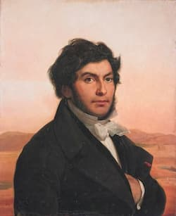

Early Life
Learn about Champollion's prodigious talent for languages and his journey to becoming a linguistic genius.
Read MoreJean-François Champollion was a brilliant linguist who unlocked the mystery of Egyptian hieroglyphs, founding the field of modern Egyptology. Explore his fascinating life, groundbreaking work, and lasting legacy.
Learn about Champollion's prodigious talent for languages and his journey to becoming a linguistic genius.
Read MoreExplore how he deciphered the Egyptian script and unlocked the secrets of ancient Egypt.
Read MoreDiscover the impact of Champollion's work and the foundation he laid for modern Egyptology.
Read More